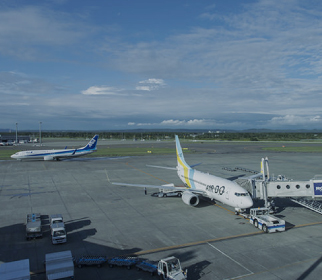

事業内容Service
山田組は“総合建設業”として
重要なインフラ工事を
主導しています。
-

01
河川
災害に強く、安全・安心な暮らしを守るため、又、水と緑の空間としての潤いと安らぎをもたらすよう環境に配慮しながら、千歳川遊水地群の大規模河川工事などを手掛けています。
-


02
空港・港湾
北海道の空の玄関口である新千歳空港に関する工事を、開港前から長年にわたって手掛けています。又、東北海道の物流拠点である釧路港の国際バルク戦略港湾関係の工事なども手掛けています。
-


03
道路
日常生活に欠かせない陸上交通施設である道路には、トンネル、橋などの構造物や通信、上下水道などのライフラインが含まれ、大切な公共の社会基盤を保つべく高速自動車道、一般国道、道道などの工事を手掛けています。
-


04
鉄道
暮らしの生命線であり、安全、確実で効率的な乗り物の鉄道工事、又、移動時間を大幅に短縮し、地域の産業や社会に大きな効果をもたらす北海道新幹線工事などを手掛けています。
総合建設業とは、工事受注から施工計画、準備・測量、工程・安全管理、工事、そして竣工検査までのすべてを取りまとめる建設会社のことです。建設業では、大工や左官などの専門工事業者や設計業者など多くの技術者が関わります。私たちは、そのプロジェクトリーダーである「現場監督」として、質の高い工事を計画的に、安全に進めるよう全力で取り組んでいます。
※大工工事、鉄筋工事、とび、土工などは「専門工事業者」といいます。
-

プロジェクト管理・進行
工事受注後、最適な手順と方法を考えて施工計画を立案し、工事が始まった後は工期通りに円滑に工事を進めるよう日々確認や調整を繰り返し、工事全体を責任を持って牽引します。
-

品質確保・チェック
施工計画に基づいて工事の品質が確保されているか、材料や施工方法などプロセスごとに担当技術者が丁寧に緻密に確認、チェックを行いながら、完成を目指します。
-

総合的なマネジメント
各専門業者それぞれと折衝し、スケジュールや工程などを調整。現場で働く人たちの安全を確保するとともに、周辺の環境保全、地域住民への配慮など総合的なマネジメント業務を遂行しています。

常に進化・向上を目指し、
最新技術を取り入れています。
通信衛星、ドローン、レーザースキャナーなどの情報通信技術や、ICT建設機械を工程の各段階で活用する新しい施工のシステムを取り入れて、生産性向上による施工の効率化に取り組んでいます。
施工事例
Works
-

-


採用情報Recruit